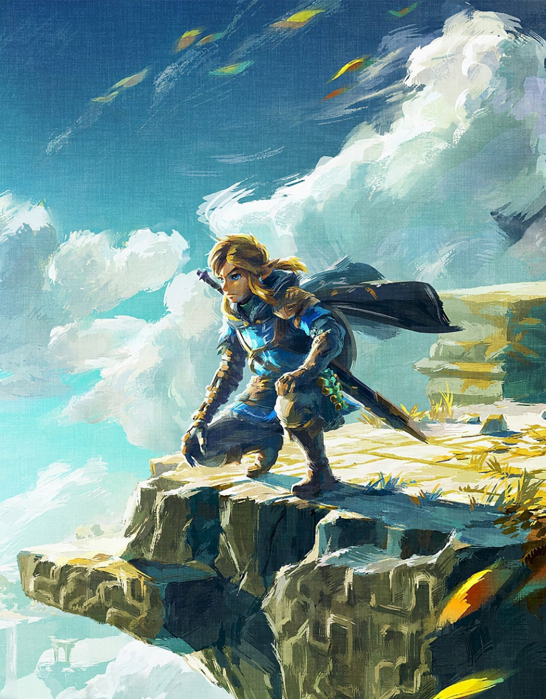

Tears of the Kingdom
Um jogo de ação e aventura lançado para o Nintendo Switch, sequência direta de "Breath of the Wild".
Com um mundo expandido, os jogadores podem agora explorar ilhas flutuantes e cavernas subterrâneas, criando uma experiência de exploração tridimensional única. O jogo inova com a habilidade Fuse, permitindo combinar armas e itens, além de ferramentas como o Ultrahand, que manipulam o ambiente para resolver quebra-cabeças. Visualmente deslumbrante, Hyrule se torna ainda mais imersivo com paisagens incríveis e uma trilha sonora marcante.
Tears of the Kingdom entrega uma aventura épica e fascinante, reafirmando o legado de Zelda e encantando jogadores de todos os níveis e idades.
